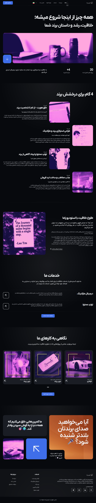

[عنوان پروژه نمونه اول]
مشتری: شرکت نمونه پیشرو در صنعت XYZ
توضیح مختصری در مورد این پروژه، اهداف اصلی آن و اینکه چگونه به مشتری کمک کرده است. این پروژه با تمرکز بر ارائه یک تجربه کاربری بینظیر و طراحی مدرن و واکنشگرا پیادهسازی شده است. چالش اصلی در این پروژه [چالش اصلی] بود که با [راهحل شما] برطرف گردید.
بازدید از سایت نمایش اسکرینشات![تصویر شاخص مربعی پروژه [نام پروژه]](assets/images/future-webdesign.jpg)
نمای کامل صفحه اصلی وبسایت

(برای اسکرول تصویر، دستگیره کنار را بکشید)
جزئیات فنی و امکانات پیادهسازی شده
در این پروژه از آخرین تکنولوژیهای وب و با تمرکز بر سیستم مدیریت محتوای وردپرس استفاده شده است. برخی از موارد کلیدی عبارتند از:
تکنولوژیهای اصلی:
- وردپرس
- قالب: [نام قالب یا طراحی اختصاصی]
- پلاگینهای کلیدی: [ووکامرس، ACF، المنتور و...]
- HTML5, CSS3, JavaScript
امکانات و ویژگیهای برجسته:
- [ویژگی خاص اول، مثلا: سیستم رزرو پیشرفته]
- [ویژگی خاص دوم، مثلا: طراحی کاملا واکنشگرا]
- [ویژگی خاص سوم، مثلا: بهینهسازی سرعت لود]
- [ویژگی خاص چهارم، مثلا: پنل مدیریت سفارشی]
نقش من در این پروژه شامل [طراحی کامل UI/UX، توسعه فرانتاند، پیادهسازی با وردپرس، مدیریت محتوا و ...] بوده است. هدف اصلی، ارائه محصولی بود که نه تنها نیازهای کارفرما را به طور کامل پوشش دهد، بلکه تجربه کاربری لذتبخشی را نیز برای بازدیدکنندگان نهایی فراهم آورد.
سایر نمونه کارها


آیا این پروژه برای شما الهامبخش بود؟
اگر این نمونه کار مورد توجه شما قرار گرفته و یا ایدهای مشابه یا متفاوت در ذهن دارید، باعث افتخار من است که در مورد آن با شما گفتگو کنم و به تحقق رویای دیجیتالی شما کمک کنم.
بیایید پروژه بعدی شما را با هم بسازیم!